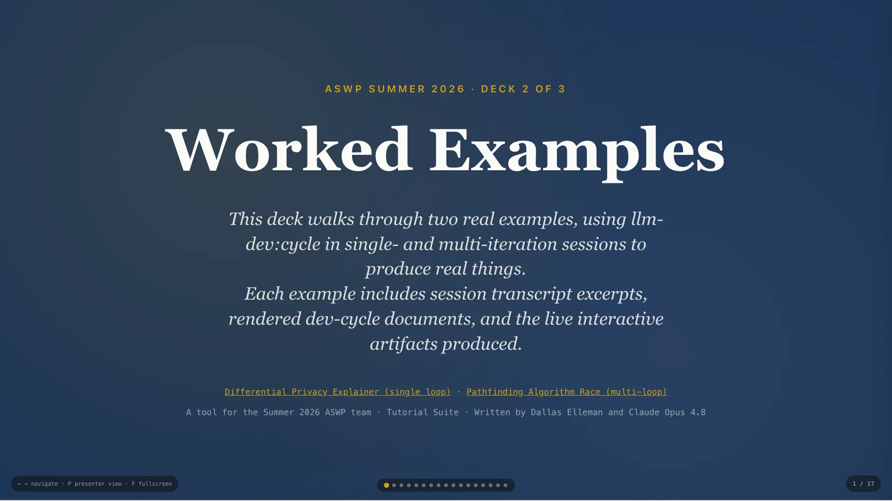
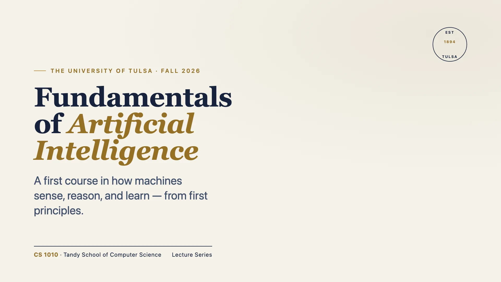
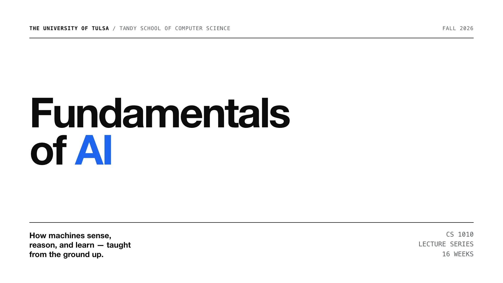

Several deck style and JS engine choices for your inspection and feedback.
Decks 1 and 2 taught the method and showed it worked. This short deck is different: it lays out the two deck-building systems we now have, the trade-offs between them, and asks the team to weigh in on where we go next. Nothing here is locked — that's the point.
On the following slides, you'll see some initial options and styles for our slide decks to follow. Feel free to copy and modify the styles — and suggest other themes.
Similarities across options
Vanilla HTML/CSS/JS · zero dependencies · runs fully offline from
file:// · system fonts only — no CDNs, no build step.
Differences between options
Responsive flow (our starter/) vs a
fixed 16:9 canvas (deck-stage). Everything else
follows from that one choice.
Both satisfy the hard constraints, so the decision isn't about offline-safety — it's about layout philosophy and the features each model makes easy.
It's the theme template from Decks 1 and 2. Features:

This is the engine behind Decks 1 and 2. Its strength is that it's a web document that happens to present: it reflows, it's accessible, and it's small enough to teach. The launch button opens Deck 2 so the team can feel it live.
The following slides show three different styles with the same underlying
presentation engine: author at 1920×1080 and it scales
pixel-perfect to any screen, like a polished .pptx.
The trade
A heavier engine (~1796 lines, shadow DOM) and — today — no built-in presenter
view or Markdown pipeline. Built with Claude Design.
This is shaped like the thing we're replacing: a fixed projector slide. The print-to-PDF is a real asset given our PowerPoint-fallback path and the open Chromebook/Google-Drive question. The cost is a bigger engine and features we'd have to rebuild.
An editorial, academic feel — warm paper, navy ink, a single gold accent. Credible and unhurried.
Best for: formal university lectures.

The university-leaning option. Launch it to show the thumbnail rail, keyboard nav, and the inline SVG neural-net diagram on slide 5.
A Swiss / neo-grotesque system — huge bold type, visible structure, one electric royal-blue accent. Modern and engineering-minded.
Best for: technical, high-impact talks.

The starkest, most structural option. Monospace index bars, a faint column grid, 800-weight display type.
A friendly, geometric system — deep indigo, rounded shapes, a warm coral / teal / gold palette. Energetic and approachable.
Best for: K-12 and intro outreach.
The most approachable, K-12-leaning option. Pill labels, decorative blobs, rounded cards — playful but still professional.
Neither is "better" — they optimize for different things.
Our starter/ | deck-stage | |
|---|---|---|
| Layout | Responsive flow | Fixed 16:9, scale-to-fit |
| Present view | Built-in (notes + timer) | Not yet |
| Markdown embeds | Yes (pipeline) | No |
| Print → PDF | No | Yes, clean |
| Themes ready | 1 (navy/gold) | 3 polished |
| Accessibility | Reflow + zoom | Uniform scale |
The one-liner: deck-stage is PowerPoint-shaped (great for projector,
PDF, the Chromebook fallback); our starter is web-document-shaped (responsive,
accessible, teachable). The right answer depends on how decks actually get delivered.
1 · Coexist — keep the starter as our spine; offer the three themes as a parallel style gallery. (Where we are now.)
2 · Port the look — re-theme the starter with the A/B/C design languages; keep all our features.
3 · Switch — adopt deck-stage as
the engine; rebuild the presenter view + Markdown we'd lose.
4 · Targeted merge — harvest the best of
deck-stage (print-to-PDF, the themes) into our engine, in stages.
These aren't all-or-nothing. Option 4 is the pragmatic middle — take the wins we clearly want (print-to-PDF, the polished themes) without abandoning the engine we know. But this is the team's call.
Open the decks, click around, and weigh in. Your preference shapes the direction we take.
Drop a comment with your pick and a sentence on why — and 👍 the options you like — on the team issue:
The deck is a decision-support tool, not a verdict. Point everyone at the GitHub issue; comments + thumbs-up reactions give us a lightweight read on where the team leans before we commit engineering time.
Deck 1 gave you the method. Deck 2, a worked example. Deck 3, a styling choice. Go build — and tell us which way to take it.
Wrap-up: the three decks together are the on-ramp. The team now has the method, a worked example, and a real choice of look — plus a say in the engine we standardize on. Next step is theirs.